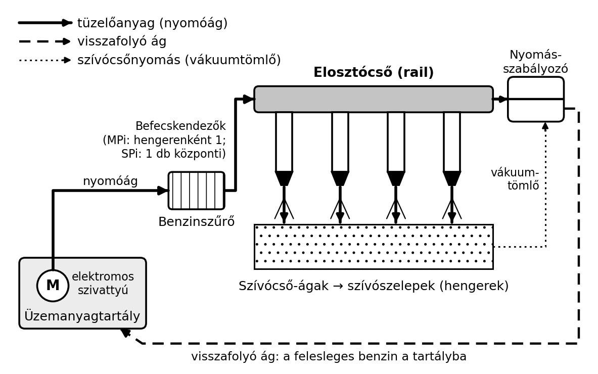

A szívócső-befecskendezés a benzinmotorok keverékképzésének az a megoldása, amely a karburátor után, de a közvetlen befecskendezés előtt a legnagyobb mennyiségben terjedt el a személygépkocsikban. Műhelyi szempontból ezért fontos: ha a motor rángat, hidegen rosszul indul, magas a fogyasztása, vagy a keverékadaptáció hibakódját tárolja a motorvezérlő, a szerelőnek tudnia kell, hogy a hibát a levegő- vagy a tüzelőanyag-oldalon, esetleg a vezérlőrendszerben keresse. Ebben az alfejezetben a központi (SPi) és a hengerenkénti (MPi) szívócső-befecskendezést hasonlítjuk össze, megismerjük a befecskendezési idő és a tüzelőanyag-mennyiség kapcsolatát, valamint a rendszer nyomásviszonyait.
Képzeljük el a rendszert úgy, mint egy kerti locsolótömlőt, amelynél a csapot nem kézzel nyitjuk, hanem egy elektronikus vezérlőegység nyitja milliszekundumonként, pontosan annyi időre, amennyi benzint a motor éppen beszívott levegője igényel. A tartályban lévő elektromos szivattyú állandó nyomást tart fenn, a benzinszűrő megtisztítja a folyadékot, az elosztócső pedig a befecskendezőkhöz továbbítja. A befecskendező (injector) elektromágneses tűszelep: amíg a vezérlőegység árammal gerjeszti, addig nyitva tartja a fúvókát, és a benzin apró cseppekre porlasztva a szívószelep elé kerül. A felesleges benzint a nyomásszabályozó a visszafolyó ágon keresztül visszaengedi a tartályba.

Az ábra a visszafolyó ágas elrendezést mutatja: a benzin az injektorokból a szívócsőbe, a szívószelep elé jut, a nyomásszabályozó pedig az injektorokkal párhuzamosan, az elosztócső végéről engedi vissza a felesleget a tartályba. A későbbiekben látni fogjuk, hogy létezik visszafolyó nélküli rendszer is, amelynél a nyomásszabályozó a tartályban vagy a szivattyúmodulban van.
Definíció. A befecskendezési idő (injection pulse width) az az időtartam, ameddig a motorvezérlő egység (ECU) az injektor tekercsét áram alatt tartja, tehát ameddig a tűszelep nyitva van; mértékegysége általában ms. A befecskendezett tüzelőanyag-tömeg ennek és a fúvókán átáramló tömegáramnak a szorzata.
Definíció. Szívócső-befecskendezésnek (port injection) nevezzük azt a benzinbefecskendezési módot, amelynél a tüzelőanyagot a szívószelep(ek) elé, a szívócsőbe vagy a szívócső közös részébe porlasztják. Ezen belül:
Összefüggés. Ha a fúvókán a nyomáskülönbség és az injektor effektív keresztmetszete állandó, akkor a tömegáram jó közelítéssel:
ahol az injektor átfolyási tényezője, a benzin sűrűsége. A befecskendezett tüzelőanyag-tömeg pedig:
Ebből következik, hogy adott nyomáskülönbségnél a benzinmennyiséget a befecskendezési idő arányosan határozza meg. Az ECU tehát elsősorban az alap-befecskendezési időt számítja a beszívott levegő tömegéből és a kívánt légviszonyból, majd ezt korrekciókkal módosítja (hidegindítás, alapjárat, terhelésváltás, lambda-szabályozás).
Továbbvitt eredmény. Az kapcsolatot (állandó mellett) használjuk a Közvetlen befecskendezésű Otto-motorok, az Otto-motorok utókezelése: háromutas katalizátor és lambdaszabályozás és a A motorirányítás alapjai: vezérlőegység, szabályozási kör, üzemállapotok és rendszerek alfejezetben.
A karburátor a szívócsőben kialakuló vákuum hatására porlaszt, ezért elosztása a hengerek között egyenetlen lehet, hidegindításkor szivatóra van szükség, és a keverék pontossága korlátozott. A szívócső-befecskendezés ezzel szemben:
A régebbi járműveken a következő típusokkal találkozhatunk:
Ma ezeket a rendszereket már inkább csak veterán vagy régebbi használt járműveken találjuk; működési elvüket a modern szívócső-befecskendezés előzményeként érdemes ismerni.
A mai értelemben vett szívócső-befecskendezés már integrált motorvezérlés, amelyben a gyújtást és a befecskendezést egy közös ECU vezérli (például a Motronic típusú rendszerek). Ez lehetővé teszi, hogy a befecskendezési időt, a gyújtási szöget és az alapjáratot azonos üzemállapot-felismerés szerint hangolják össze. Az MPi-rendszerben minden hengerhez külön injektor tartozik, amely a szívószelep fejéhez közel, a szívócsőben helyezkedik el.
Az injektor működése az ábrán: a motorvezérlő a csatlakozón (1) át ideig gerjeszti a tekercset (2), amely behúzza az armatúrát és a tűt (3); a záró rugó (4) gerjesztés nélkül az ülékre nyomja a tűt. A benzin a szűrőszitán (5) át lép be, az O-gyűrűk (6) tömítenek, a porlasztótárcsa (7) a sugarat a szívószelep tányérjára irányítja. Az SPi-nél egyetlen injektor porlaszt a fojtószelep fölé.
A motorvezérlő érzékelői közül a legfontosabbak:
A vezérlés módja az injektorok kinyitásának időzítése szerint háromféle lehet:
A befecskendezési mennyiség pontossága azt követeli, hogy a fúvókán a nyomáskülönbség állandó legyen. A szívócsőben a nyomás a fojtószelep állásától függően vákuumtól (alapjáraton) a közel atmoszférikus értékig (teljes terhelésen) változik. A nyomásszabályozó ezért tüzelőanyag-oldali túlnyomást tart fenn a szívócsőnyomáshoz képest.
Szabály. A visszafolyó ágas rendszerben a mechanikus nyomásszabályozó membránja egyik oldalán a benzin nyomása, a másik oldalán a szívócső nyomása hat. A szabályozó a felesleges benzint visszaengedi a tartályba, így az injektorokon a nyomáskülönbség közel állandó. Jellemző értéke szívócső-befecskendezésnél:
(ellenőrizendő: a gyártói javítási adat). Ez az érték a rendszernyomás, ha a szívócső nyomása atmoszférikus (a vákuumtömlő lehúzva vagy teljes terhelésen).
Definíció. Visszafolyó nélküli rendszerben (returnless) a nyomásszabályozó a tartályban vagy a szivattyúmodulban van, és a motorháztető alatt csak egy nyomócső fut. Ennél a rendszer a fúvókákon lévő nyomáskülönbséget nem a szívócső vákuumához igazítja mechanikusan, hanem az ECU a befecskendezési időt korrigálja a mért szívócsőnyomás alapján, vagy a rendszer állandó nyomáson dolgozik, és ezt a vezérlő szoftveresen kompenzálja. A visszafolyó nélküli rendszer csökkenti a benzin felmelegedését és a gőzképződést a motorháztető alatt.
Számítás 1. – Befecskendezett tüzelőanyag-tömeg.
Egy MPi-rendszer injektorának statikus átfolyása nyomáskülönbségnél. A motorvezérlő egy ciklusban ideig nyitja az injektort. Mennyi benzint adagol a befecskendező egy ciklusban?
Megoldás. Először átváltjuk az átfolyást g/s-ba:
Ezután a befecskendezett tömeg:
Ellenőrzésképp: egy ciklusban nagyságrendileg néhány század gramm benzin kell, ez reális.
Számítás 2. – A befecskendezési idő meghatározása a légtömegből.
Egy négyütemű, négyhengeres motor fordulatszámon hengerenként levegőt szív be. A benzin sztochiometrikus levegő/tüzelőanyag-aránya , azaz esetén 1 kg benzinhez 14,7 kg levegő kell. Az injektor átfolyása a fenti adat szerint. Mekkora befecskendezési idő szükséges hengerenként, ha feltételezzük, hogy a befecskendezés módja szekvenciális?
Megoldás. A szükséges tüzelőanyag-tömegáram hengerenként:
A két tömegáram hányadosa egység nélküli szám, az injektor kitöltési tényezője (duty cycle):
Ez azt jelenti, hogy az injektornak a ciklusidő 16,3 %-ában kell nyitva lennie. Mivel a motor fordulaton négyütemű, egy teljes munkaciklus időtartama:
A befecskendezési idő tehát . A kitöltési tényező korlátot jelent: ha a szükséges érték 80–85 % fölé menne (ellenőrizendő: gyártói adat), az injektor túl kicsi, és nagyobb átfolyású injektorra vagy nagyobb nyomáskülönbségre lenne szükség. A befecskendezési idő soha nem haladhatja meg a ciklusidőt.
Ellenőrző számítás: ha a szükséges benzinmennyiséget hengerenként ciklusonként számoljuk, akkor a levegő tömege hengerenként egy ciklusban:
A kívánt benzin tömeg:
Ezzel a befecskendezési idő:
Ez már reális, mert a ciklusidő 60 ms. Látható, hogy a befecskendezési idő számításakor mindig a ciklusra vetített mennyiségekkel kell dolgozni.
A rendszer ellenőrzésekor a következőket mérjük (mindig a gyártói adat elsőbbségével):
Egy 2006-os, 1,4 literes MPi benzinmotoros személygépkocsi tulajdonosa hidegindítási nehézségről és magas fogyasztásról számol be. A motor melegen jár, de hidegen rángat, a kipufogóból enyhe benzinszag érezhető.
A hibakeresési lánc: először a rendszerteszterrel kiolvassuk a hibakódot. A motorelektronika a hűtőfolyadék-hőmérséklet-érzékelő jelét irreálisan alacsonynak látja, mert az érzékelő szakadt vagy nagy ellenállású. Az ECU ezért hidegindítási korrekciót alkalmaz, a befecskendezési időt folyamatosan meghosszabbítja, és a motor dús keverékkel jár. A mérés során a hőmérséklet-érzékelő ellenállása -on a gyártó által megadott tartományon kívül van (például 8 kΩ helyett 20 kΩ). Az érzékelő cseréje után a hidegindítási korrekció megszűnik, a tünet elvész, és a fogyasztás normalizálódik.
Tanulság: a befecskendezési idő nem csak a levegőmennyiségtől függ, hanem a hőmérséklet-érzékelők korrekcióitól is. A hibás érzékelő jele rontja a keverék pontosságát.
Biztonsági korlát. A feladat tanműhelyi környezetre, oktató felügyeletére és a gyártói javítási utasítás betartására vonatkozik; a megadott értékek tanulási példák.
Cél: a szívócső-befecskendező rendszer üzemanyagnyomásának és maradéknyomásának ellenőrzése.
Szükséges szerszámok: üzemanyagnyomás-mérő készlet, söntcsatlakozó, szerelőszerszámok, égésgátló anyag, védőszemüveg, nitrilkesztyű, gyűjtőedény, elszívóberendezés.
Figyelem. A benzin tűz- és robbanásveszélyes. Nyílt láng, szikra, elektromos szerszám és égő forrás a mérés közben nem lehet a közelben. Zárt térben járó motornál elszívó szükséges.
Munkalépések:
A képsor a 3–7. lépést követi. A 4. képen a vákuumtömlő lehúzásakor a nyomás megnő; leállítás után a maradéknyomás csak lassan csökkenhet, a gyors esés szivárgásra utal. Az áthúzott kép a tiltott gyakorlatot mutatja: nyomás alatti bontást rongy és gyűjtőedény nélkül, szikraforrás közelében.
Önellenőrzés – válaszok:
1. feladat (A). Definiálja a központi (SPi) és a hengerenkénti (MPi) befecskendezést, és adja meg mindegyik egy előnyét.
2. feladat (A). Egy befecskendező nyomáskülönbségnél benzint adagol. Mennyi benzin kerül be egy ciklusban alatt?
3. feladat (B). Négyütemű, négyhengeres motor fordulaton hengerenként levegőt szív be. Számítsa ki a ciklusra jutó befecskendezett benzin tömegét esetén, ha , és határozza meg a befecskendezési időt, ha az injektor átfolyása .
4. feladat (B). Ismertesse a szimultán, csoportos és szekvenciális befecskendezési módok közötti különbséget. Melyik a legpontosabb, és miért?
5. feladat (C). A visszafolyó ágas rendszerben a vákuumtömlőt lehúzták. A motor meleg állapotban dúsan jár. Magyarázza el, miért dúsul a keverék, ha a szabályozó alapfunkciója épp az állandó nyomáskülönbség fenntartása.
6. feladat (D). Egy ügyfél hidegindítási rángatásra, magas fogyasztásra panaszkodik. A rendszerteszter élő adatai szerint a befecskendezési idő hideg motornál , meleg motornál , a hűtőfolyadék-hőmérséklet érzékelő mért hőmérséklete azonban a valós (infravörös hőmérővel ellenőrzött) helyett -ot mutat. Mi a legvalószínűbb hiba, és hogyan ellenőrzi?
1. Az SPi egyetlen befecskendezőt használ a fojtószelepnél (olcsóbb, de a hengerelosztás egyenetlenebb), az MPi hengerenként külön befecskendezőt a szívószelep előtt (pontosabb hengerelosztás, jobb emisszió).
2. Először az átfolyás: . A befecskendezett tömeg: .
3. Ciklusidő: . Levegő hengerenként: . Benzin: . Idő: .
4. Szimultán: minden injektor egyszerre nyit; csoportos: csoportokban nyitnak; szekvenciális: hengerenként a szívási ütemhez időzítve. A szekvenciális a legpontosabb, mert a benzin nem várakozik a szívócsőben, a keverékképzés hengerenként optimális, a hidegindítás és az emisszió jobb.
5. A vákuumtömlő lehúzásakor a szabályozó membránjának egyik oldala a szívócsővákuum helyett a külső légnyomást kapja. A szabályozó így magasabb rendszernyomást állít be, mint amit az ECU feltételez. Mivel a nyomáskülönbség a fúvókán megnő, ugyanaz a befecskendezési idő több benzint adagol, ezért dúsul a keverék. Ez a hiba a gyártói vákuumcsatlakozás visszaállításával szüntethető meg.
6. A mért hőmérséklet-érzékelő jel ellentmond a valós hőmérsékletnek. Az érzékelő ellenállása nem felel meg a karakterisztikának (szakadt vagy hibás), ezért az ECU hideg motort feltételez, és meghosszabbítja a befecskendezési időt. Ellenőrzés: az érzékelő ellenállásának mérése multiméterrel hideg és meleg állapotban, összehasonlítás a gyártói karakterisztikával. A javítás: az érzékelő cseréje, hibakód-törlés, majd readiness-ellenőrzés.
A szívócső-befecskendezés a karburátorhoz képest pontosabb keverékképzést biztosít. Központi (SPi) esetén egyetlen injektor adagol a fojtószelepnél, hengerenkénti (MPi) esetén hengerenként külön injektor a szívószelep előtt. A befecskendezett tüzelőanyag-tömeg , ahol a fúvókán átáramló tömegáram. A nyomásszabályozó állandó nyomáskülönbséget tart a fúvókán; a visszafolyó nélküli rendszer a szabályozót a tartályba helyezi. A befecskendezési mód lehet szimultán, csoportos vagy szekvenciális; utóbbi a legpontosabb. A befecskendezési idő számításakor ciklusra vetített mennyiségekkel kell dolgozni. Továbbvitt eredmény: a befecskendezési idő és a tüzelőanyag-mennyiség kapcsolatát használjuk a Közvetlen befecskendezésű Otto-motorok, az Otto-motorok utókezelése: háromutas katalizátor és lambdaszabályozás és a A motorirányítás alapjai: vezérlőegység, szabályozási kör, üzemállapotok és rendszerek alfejezetben is. A benzinnyomás mérésekor a nyomásmentesítés és a tűzvédelem kötelező.